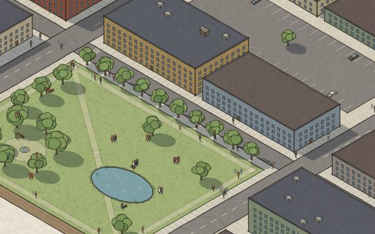
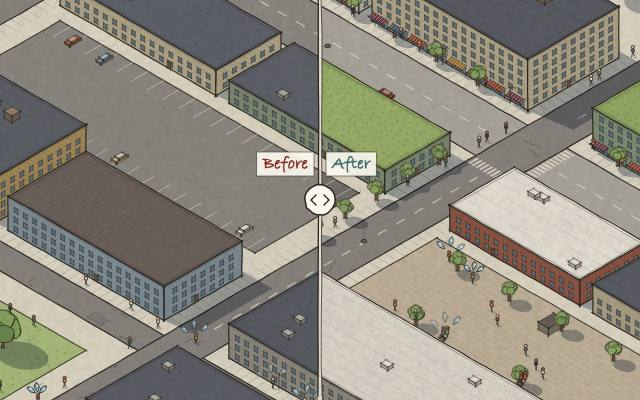
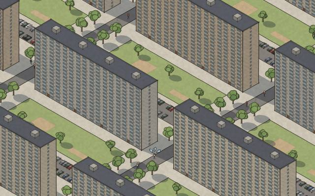
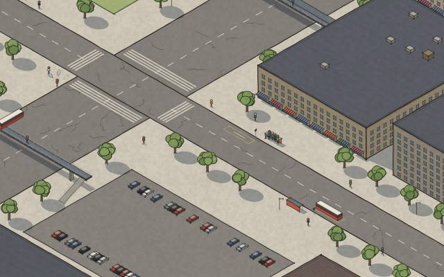
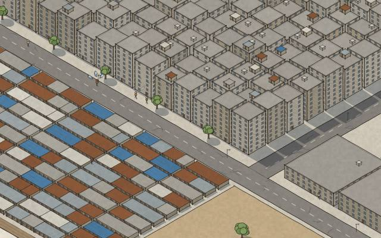
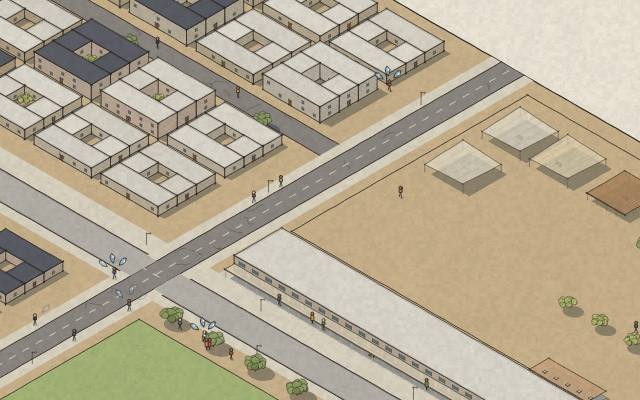
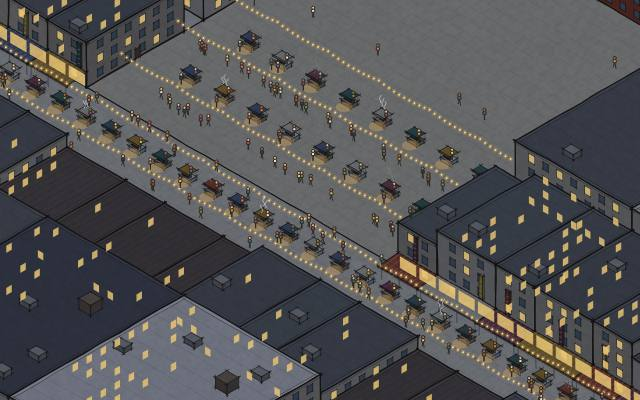

Thermal-Ink Atlas
Hand-inked city blocks that show urban heat through a heat-wave day. Each block is made up, not a real place, and its temperatures are calculated from published measurements. Open one and slide through the day.

Asphalt street vs pocket park
An old sunbaked street, one block from a shady lawn and pond.
Made-up block · calculated temperatures
Slide through the day and watch the street heat up while the park stays cool.

Sponge-city and cool-roof retrofit
The same block before and after: cool and green roofs, permeable paving, rain gardens, young trees.
Made-up block · calculated temperatures
Pull the divider between before and after, and see how fast the wet ground dries after rain.

Glass towers and street canyons
Deep streets shade by day and cool slowly at night; glass façades throw hot spots of reflected sun onto the street.
Made-up block · calculated temperatures
Switch the glass and watch the patch of reflected sun move across the street.

Waterfront and wind corridors
Streets that point along the river wind stay breezier and cooler; the river cools only a short way, and the still pond is warm at night.
Made-up block · calculated temperatures
Turn on the wind and see which streets the river breeze reaches.

Hutong lanes and courtyards
Low lanes stay in the sun at noon; trees, vines and the summer mat awning (天棚) give the shade, and an evening splash cools the paving for a few hours.
Made-up block · calculated temperatures
Splash the lanes in the evening, and step under the summer mat awning (天棚).

Car park and brownfield
Thick asphalt and concrete store the day's heat and give it back all night; the rusty sheds and the dry brownfield soil cool much sooner.
Made-up block · calculated temperatures
Stay until 11 pm and watch the car park give back the day's heat.

Older high-rise estate
Rows spaced for two hours of winter sun leave the summer courtyards open to the midday sun; the AC condensers pour out heat the air here cannot feel.
Made-up block · calculated temperatures
Compare July with the winter shadows the rows were spaced for, and show where the air conditioners' heat goes.

School campus playground
Artificial turf and play rubber get 20–40 degrees hotter than grass; shade sails and trees cool them, watering the pitch only for minutes.
Made-up block · calculated temperatures
See which play surfaces would burn bare skin at 3 pm, and what watering the pitch does.

Bus stops and footbridges
Under an opaque shelter roof the people waiting feel about 34 degrees cooler; in the late afternoon the low sun gets in from the side, and a west screen helps more than a bigger roof.
Made-up block · calculated temperatures
Wait for the bus at 5 pm and find the one seat the low sun cannot reach.

Urban village and informal edge
Lanes two metres wide keep much of the sun out by day but keep people from cooling off at night; bare iron roofs reach about 71 °C, and the residents' white paint makes them about 21 degrees cooler.
Made-up block · calculated temperatures
Paint the bare iron roofs white, and look at the warmth inside the rooms under them.

Desert courtyard neighbourhood
Under a shade sail it feels about 23 degrees cooler than in the open desert sun at 3 pm; the watered lawn stays near the air but drinks about 6.5 litres per square metre a day; the light street coating cools the road and warms the people on it.
Made-up block · calculated temperatures
Slide through the day and see where the shade is; then compare the sails, the trees and the arcade, or what the lawn costs in water.

Night market street
At 9 pm the granite street still gives back about 100 watts per square metre of the day's heat, and the crowd adds more than that; but only right next to a charcoal grill does a person feel it.
Made-up block · calculated temperatures
Walk into the evening market; show the heat given off by the stone, the crowd and the stalls, then stand next to the grill.
References: every source behind the twelve blocks, by block, with DOIs and reading status.